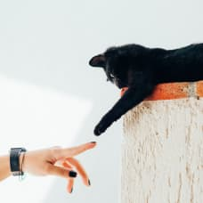

Как часто нужно стричь когти своему коту?
16.06.23

Процесс приручения дикого животного был чрезвычайно сложным, длительным, далеко не всегда успешно заканчивался. Но это было необходимо. Теперь трудно себе представить жизнь человека без таких великолепных поставщиков и помощников, какими являются домашние животные.
В самого верного друга первым превратился волк. Долгие столетия злобный хищник превращался в ту самую домашнюю собаку, которая охраняет нас, помогает охотиться, воевать, разыскивать преступников, сопровождать незрячих и многое, многое ещё. Учёные утверждают, что первые волки привыкали к людям так давно, что 26 тысяч лет тому назад им уже спокойно поручали охранять маленьких детей, оставляемых в пещере, пока родители занимаются поисками еды. Во Франции есть пещера со следами ребёнка и собаки (или ещё волка), датируемыми именно этим столетием. Постепенно природа дикого животного под воздействием человека менялась, возникали всё новые и новые породы, можно сказать — узко специализированные. Различие бывшие волки получили и в величине, и в форме тела, в масти и во множестве других признаков. Дрессировке собаки поддаются превосходно. У них обоняние во множество раз лучше человеческого, поэтому они гораздо успешнее стерегут стадо, охраняют имущество, на севере перевозят людей и грузы, служат на границах и таможнях, а также связистами, подрывниками, разведчиками на войне, спасателями в горах и на водах. Людям собаки преданы всем сердцем, готовы погибнуть сами, чтобы спасти хозяина. Это касается любых, даже абсолютно декоративных пород.
Это домашнее животное находится у человека на привилегированном положении как минимум десять тысяч лет. В дикой природе кошек, наверное, меньше, чем в неволе, где они чувствуют себя настоящими хозяевами. Как только древние люди перестали кочевать, начали жить оседло, возделывая поля, появилась необходимость в охране запасов.